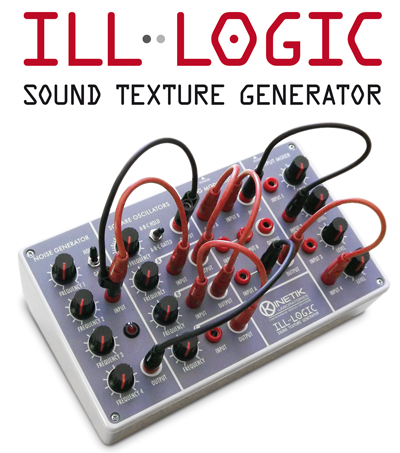
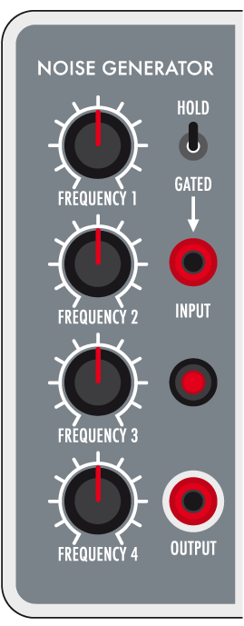
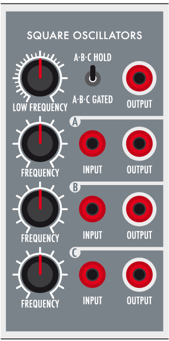
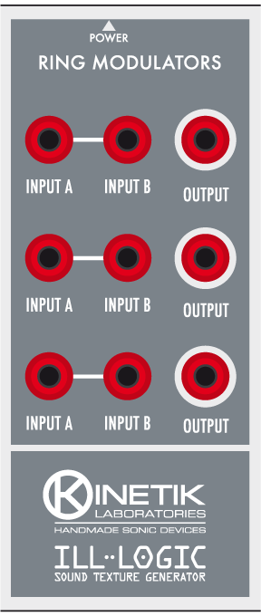
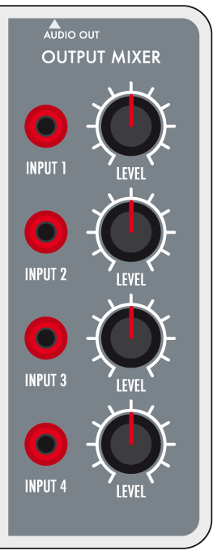

ILL-LOGIC

Production year: 2014
ILL-LOGIC is a stand alone compact system with semi-modular structure. It can be used to generate complex sound textures. Using 4mm banana plugs it offers great functional flexibility and small footprint.
It has 12 knobs, 22 connection points, two switches and a red led that reflects the behavior of the noise generator.
The input plugs accept any output allowing you to experience the most of its sonic potential.
It must be supplied with an external power supply, providing 9vDC on 2.1mm barrel jack, negative tip.

The noise generator circuit is formed by four oscillators modulating each other and generates similar sounds to those obtainable with cross-modulation technique.
Tuning the oscillator's pitches allows complex variations in tone and granularity.
The switch can be used to obtain a continous sound (HOLD) or to enable the underlying INPUT plug (GATE).
The INPUT plug accepts signals coming from LOW FREQUENCY oscillator or signals from any other OUTPUT plug, on which it acts adding timbral contents typical of the NOISE GENERATOR circuit.

ILL-LOGIC has four square wave oscillators. Oscillators pitch can be adjusted using the FREQUENCY knob.
The first oscillator ranges from low frequencies to audio rate and is always active. The A-B-C oscillators have audio frequency range.
When the switch is in A-B-C HOLD position the oscillators deliver a continued sound. In A-B-C GATED position, a signal must be provided on the INPUT plug to obtain the oscillator sound. Any OUTPUT plug can provide this gate signal.
Using the low frequency oscillator output to gate the oscillator will provide a pulsing sound. Connecting the NOISE GENERATOR output to the oscillator input allow a slight noise coloring.
Using the OUTPUT of an oscillator connected to the INPUT of another allows oscillator synchronization.

This section features three ring modulator stages, each with two inputs and one output. It can process signals from the oscillators and from the noise generator. The OUTPUT plug can be used to provide the gate signal for the oscillator INPUT plug when the oscillator is in gated mode.

A four channel mixer allows volume settings of the signals connected to the INPUT plugs.
Here some demos. Enjoy.